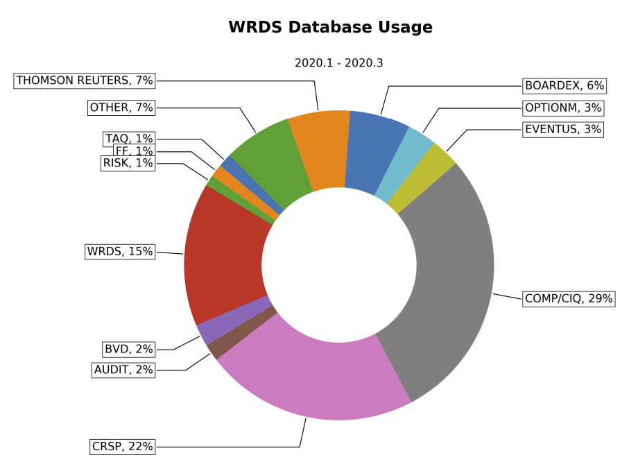

Introduction to WRDS#
A Platform For Financial Data#
Wharton Research Data Services (WRDS) is a data research platform and business intelligence tool widely used in academic, government, and corporate sectors. It provides access to a vast repository of financial, economic, and marketing data, which is pivotal for conducting rigorous research in various fields, especially in finance and economics. The platform is known for its comprehensive and high-quality datasets.
WRDS offers a variety of datasets from numerous sources, including leading data providers like Compustat, CRSP, IBES, and Bloomberg. It covers a wide range of data types, including:
Stock prices and trading volumes
Financial statement data
Analyst forecasts
Corporate governance data
Mutual fund and bond data
Macroeconomic data

One of the key strengths of WRDS is its user-friendly interface, which allows for easy data extraction and manipulation. It provides powerful tools for data analysis, including the ability to execute custom queries and perform complex statistical analyses. In academic settings, WRDS is particularly valued for its role in facilitating empirical research in finance and economics. It allows researchers, professors, and students to access a wealth of data necessary for testing financial theories, exploring economic trends, and developing new insights in the field of quantitative finance.
The Core Data Sets#
WRDS provides some usage statistics on their website in an introduction presentation here. This chart shows the percentage of usage across all WRDS data sets.

The two most popular data sets are CRSP and Compustat.
WRDS did an analysis finance papers published in the top 3 finance journals—the Journal of Finance, the Journal of Financial Economics, and the Review of Financial Studies—from the years 2004-2016. Out of all of these papers, the following chart shows how many times each data set was cited.

All of the listed data sets, except for those colored in red, are available in WRDS.
Compustat#
Compustat Financials, S&P Global Market Intelligence
Compustat is a comprehensive database of financial, statistical, and market information, primarily focused on publicly traded companies. It is widely used in academic research, particularly in the fields of finance and economics, for conducting in-depth analysis of company performance and market trends. The dataset includes information from various countries and markets, making it a valuable resource for both domestic and international financial research.
Key features of the Compustat dataset include:
Financial Statements: Detailed income statements, balance sheets, and cash flow statements for a wide range of companies.
Historical Data: Longitudinal data that allows for historical trend analysis and time-series studies.
Global Coverage: Data on companies from various global markets, including North America, Europe, Asia, and more.
Segment Data: Information on business segments and geographical segments of companies.
Market Data: Includes stock prices, trading volume, and other market-related information.
Corporate Actions: Data on dividends, stock splits, mergers and acquisitions, and other corporate events.
Ratios and Metrics: Key financial ratios and metrics that are pre-calculated for ease of analysis, such as ROE, ROA, and EBITDA.
Compustat is highly regarded for its accuracy, depth, and consistency, making it a fundamental resource for both theoretical and empirical research in finance. It’s extensively used for tasks like asset pricing models, risk management, portfolio construction, and corporate finance studies. For students and researchers in quantitative finance, Compustat provides a rich dataset for modeling, back-testing theories, and conducting robust financial analyses.
The following two videos provide a short introduction to Compustat on WRDS.

CRSP#

Center for Research in Security Prices
The Center for Research in Security Prices (CRSP) is a renowned financial research database, primarily recognized for its comprehensive historical data on securities traded in the United States. Established at the University of Chicago’s Booth School of Business, CRSP is a crucial resource for academic, commercial, and governmental research in finance.
Key characteristics of the CRSP database include:
Extensive Historical Data: CRSP is particularly noted for its long historical time series, which in some cases go back as far as 1925. This historical depth is invaluable for long-term financial studies and analyses.
Stock Data: The database provides detailed information on stocks listed on NYSE, AMEX, and NASDAQ, including prices, returns, trading volumes, and other market indicators.
Indices: CRSP develops and maintains a series of stock indices that serve as benchmarks for the investment industry, including value- and equal-weighted indices.
Corporate Actions: Information on dividends, stock splits, and other corporate events that impact stock valuation is extensively covered.
Treasury and Mutual Fund Data: Beyond stocks, CRSP also includes data on US Treasury bills, bonds, and mutual funds, expanding its utility for various types of financial research.
Survivorship Bias-Free Data: CRSP’s dataset is known for being free of survivorship bias, as it includes data on companies that have ceased to exist, which is crucial for accurate historical analysis.
Research Quality: The accuracy, completeness, and cleanliness of the data make CRSP a gold standard for financial research, particularly in academic settings.
For students and researchers in quantitative finance, CRSP provides essential data for analyzing stock performance, conducting empirical tests of asset pricing models, and studying market anomalies and behaviors. Its extensive historical data and robustness make it a fundamental tool for both historical analysis and contemporary market studies.
The following video provides a nice introduction to the basics of CRSP.
How do these compare with Bloomberg or Datastream?#
Choosing between financial databases like CRSP, Bloomberg, or Datastream depends on the specific requirements of the research or analysis being conducted. Each of these platforms has unique strengths and features that make them suitable for different purposes. Here are some reasons why someone might opt for CRSP over Bloomberg or Datastream:
Historical Depth: CRSP is renowned for its extensive historical data, particularly for U.S. securities. It offers data going back as far as 1925, which is invaluable for long-term historical research and analysis. This level of historical depth might not be matched by Bloomberg or Datastream.
Survivorship Bias-Free Data: CRSP’s data includes companies that have ceased to exist, which is crucial for accurate historical analyses. This feature helps in avoiding survivorship bias, making it a robust choice for academic studies that require comprehensive historical perspectives.
Data Consistency and Quality: CRSP is known for its high standards in data accuracy, consistency, and cleanliness, which are critical for reliable academic research.
On the other hand, there are some drawbacks of CRSP relative to Bloomberg or Datastream.
Limited Scope: CRSP has a limited scope relative to Bloomberg or Datastream. It primarily focuses on US markets and lacks the global coverage found in Bloomberg.
Real-Time Data: Does not offer real-time data, which is essential for current market analysis.
Less Comprehensive: Fewer types of financial data compared to Bloomberg (e.g., lacks extensive international data, commodities, real-time news).
Broadly speaking, CRSP is more suited for academic research focused on historical analysis of the U.S. stock market, offering in-depth and high-quality data with a bias-free historical perspective. Bloomberg, on the other hand, excels in providing a wide range of real-time global financial data and tools, catering more to finance professionals and analysts who require real-time data and sophisticated analysis tools. The choice between them largely depends on the specific needs, goals, and resources of the user.
WRDS Web Queries#
To familiarize yourselves to using WRDS, please watch the following video about WRDS Web Queries. While we will be automating the query process using the WRDS Python package wrds, using the web query system is a good way for initial exploration of the data.